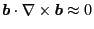

Equation. (61) can also be written as
 |
(67) |
which can be arranged in the following form
As discussed above, the last term
is usually ignored. Thus, the above
equation is written as
Define
which is related to
defined in Eq. (17)
through
, then Eq.
(69) is written as
Define
Eq. (71) is written as
which agrees with Eqs. (8)-(14) in Todo's paper[4]. Note that in
this form of the guiding center drift, the curvature drift is included in
(the second term in Eq. (72)).
Compared with Eq. (66), Eq. (73) is more accurate because
it does not use the approximation that
. The numerical results form my numerical code indicate
that Eq. (73) can conserve the toroidal angular momentum more
accurately than Eq. (66).
YouJun Hu
2014-05-19